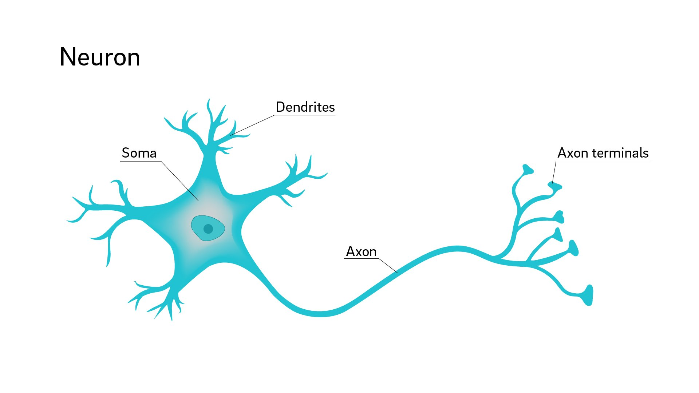
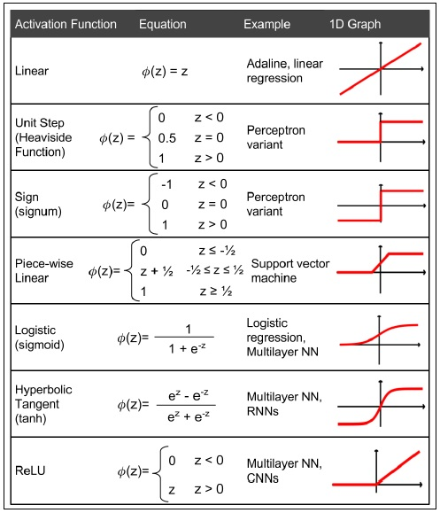

Buzz Words
Artificial Intelligence > Machine Learning > Neural Networks
Inspired by biology

But simpler

Basic principles
- Weight inputs
-
Input Function
- Sum the product of weights and inputs
-
Activation Function
- Output a value based on a threshold
Activation Functions
